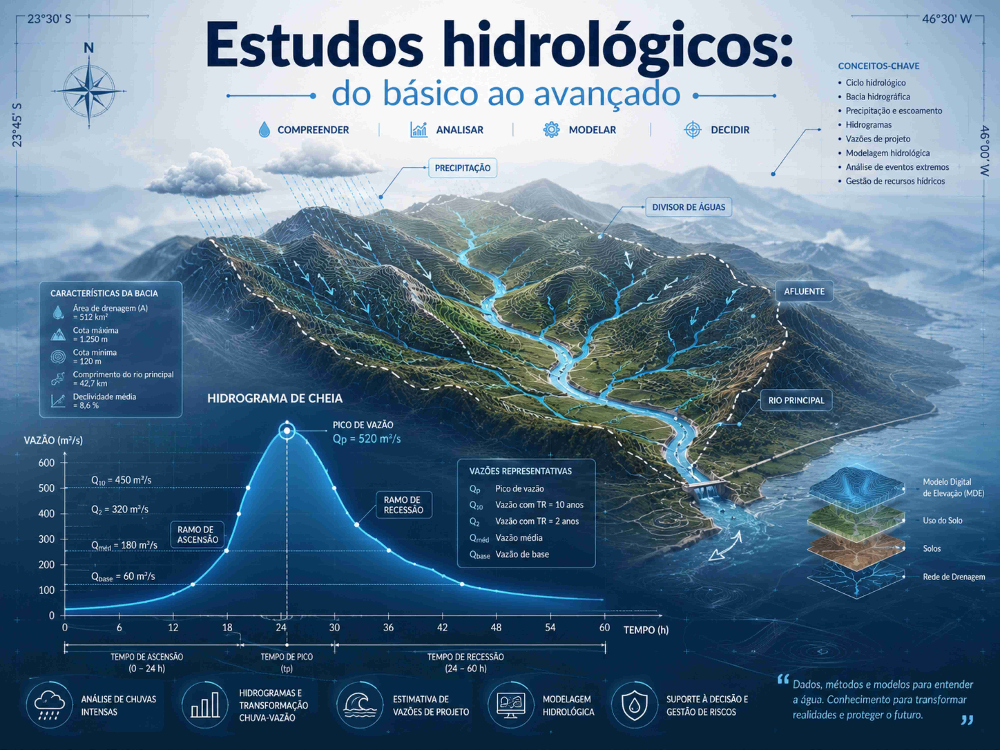
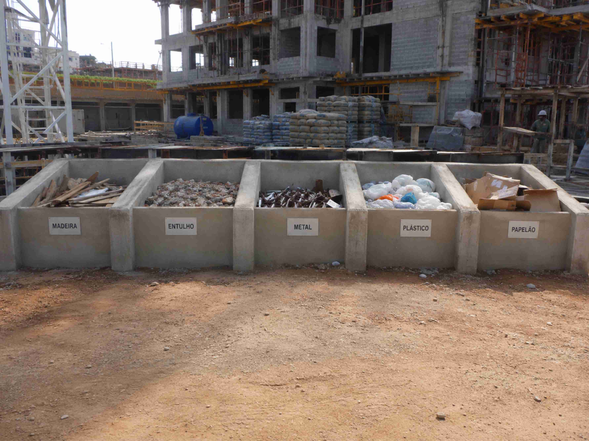

QGIS para estudos técnicos
Aprenda a realizar análises geoespaciais, a construir mapas, a interpretar arquivos Geodatabase e Shapefile, a projetar pontos no espaço e editar feições.
Saiba maisTreinamentos aplicados em recursos hídricos, estudos ambientais, geoprocessamento, modelagem computacional, PGRCC e elaboração de relatórios técnicos.
Aprenda a realizar análises geoespaciais, a construir mapas, a interpretar arquivos Geodatabase e Shapefile, a projetar pontos no espaço e editar feições.
Saiba mais
Delimite e caracterize bacias hidrográficas, calcule vazões de projeto, conheça ferramentas computacionais e metodologias de aquisição de dados em campo!
Saiba mais
Concepção de plano, dados de entrada e documentação. Elabore PGRCC adaptado às novas técnicas de construção civil!
Saiba maisGestão de contratos, orçamentos e controle de arquivos. Não perca mais tempo com tarefas administrativas!
Saiba maisEnvie as informações iniciais para avaliação da demanda e composição de proposta.
Solicitar orçamento